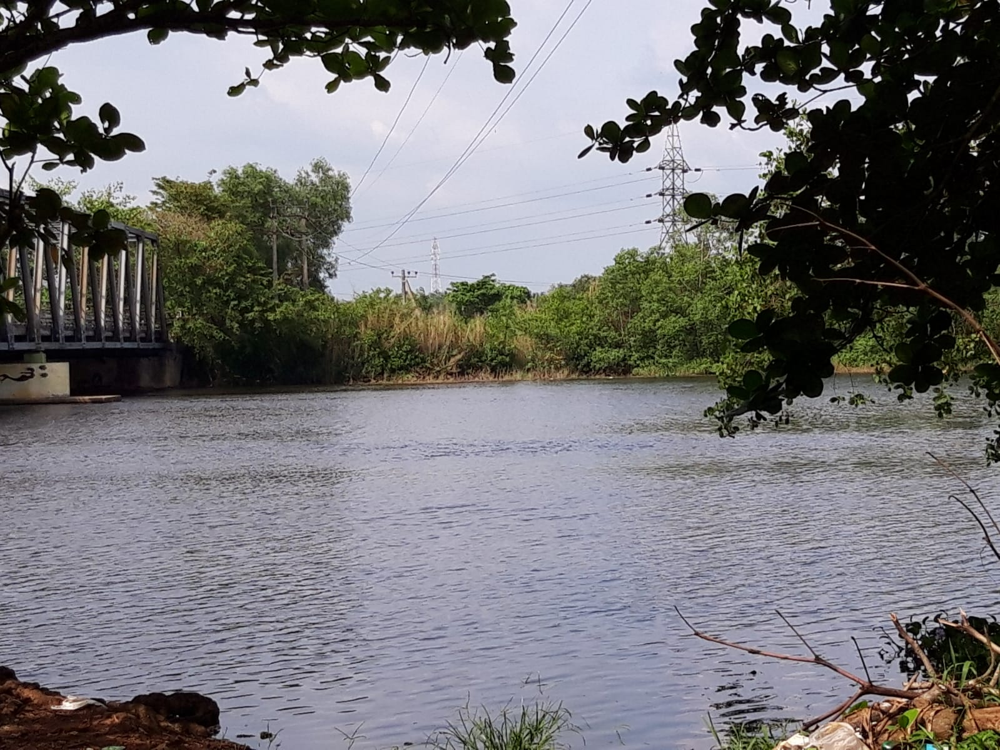
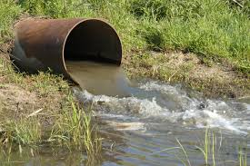

Water pollution occurs when harmful substances contaminate water bodies such as rivers, lakes, oceans,
and groundwater. These substances can include chemicals, sewage, heavy metals, plastics
and nutrients from agricultural runoff. Water pollution poses significant risks to human health,
aquatic ecosystems, and the environment.
It's crucial to address water pollution because clean water is essential for human survival, agriculture,
and wildlife. Contaminated water can lead to diseases, affect drinking water quality,
harm aquatic life, disrupt ecosystems, and degrade natural habitats. By preventing water pollution,
we can safeguard public health, protect the environment, and ensure access to safe and clean water for future generations.
"Contaminated water can cause waterborne diseases such as cholera,
typhoid, and gastrointestinal infections. It can also lead to long-term health issues
from exposure to toxic chemicals and heavy metals."
Water pollution can harm fish, amphibians,
and other aquatic
organisms by disrupting their
habitats, reducing oxygen levels,
and contaminating their food sources.
Polluted water can disrupt aquatic ecosystems, leading to declines in
biodiversity, algae blooms, and habitat degradation.It can also affect
the health of plants, animals, and organisms that rely on clean water for survival.

Dispose of trash, chemicals, and hazardous materials
properly to prevent them from entering waterways.
Use environmentally friendly products and minimize the use of pesticides,
fertilizers, and other chemicals that can leach into water sources.
Conserve water at home and in agriculture to reduce
the amount of wastewater and runoff entering water bodies.
Upgrade sewage treatment plants and implement advanced
treatment technologies to remove pollutants from wastewater
before discharging it into the environment.
Adopt sustainable farming practices,
erosion control measures, and stormwater management strategies to
reduce agricultural runoff and soil erosion.